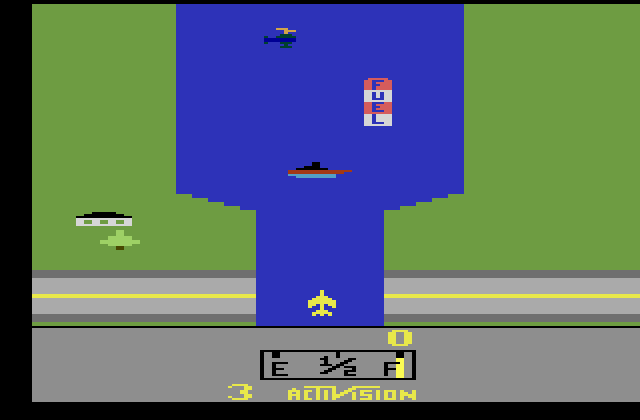
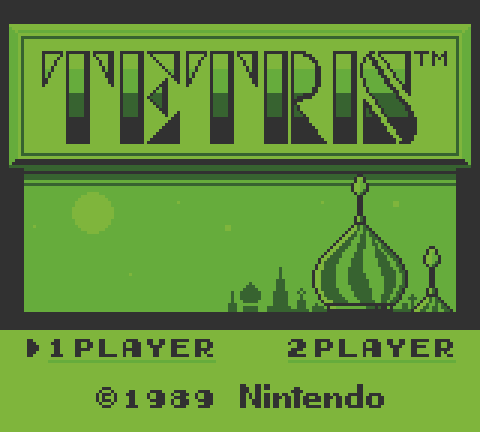
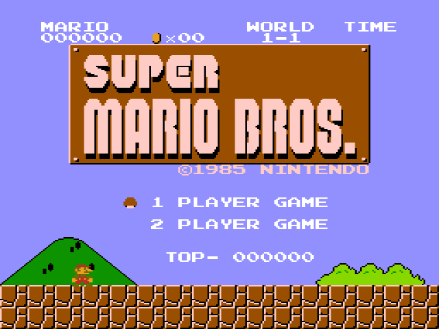
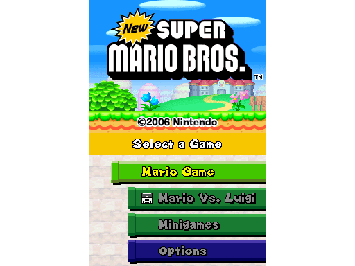
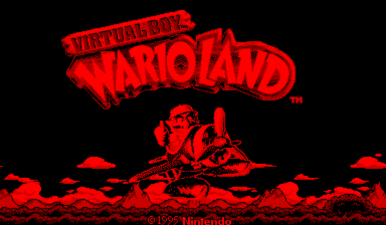

Some cores support the ability to change different display options. This is accessed by mapping "Display Mode" to a Keyboard/Controller button in Preferences > Controls.
Currently, five systems support Display Mode:
While playing Atari 2600, press the Display Mode button to cycle through NTSC/PAL/SECAM palettes and modes.

The Game Boy Color allowed one to choose which color palette to use when playing original Game Boy games. While playing Game Boy in the Gambatte core, press the Display Mode button to cycle through these including an original Game Boy green and Game Boy Pocket style palettes.

When using the Nestopia core, pressing the Display Mode button will cycle through YUV "15° Canonical" (default)/YUV "Consumer"/YUV "Alternate"/RGB palettes.

Sometimes, having an extra screen on the DS is unnecessary. Display Mode lets you choose between showing both screens, just the top screen, or just the touch screen so that you can optimize your screen space.

Display mode cycles through different palettes and Anaglyph 3D options.
